My name is Victor and I'm a Computer Engineering student at UBC. Currently, I'm completing a Co-op workterm
with Paragon Testing Enterprises as Junior Software Developer / QA. My developer role involves implementing bug fixes and
new features within Paragon's websites, web applications and test centre applications. My role as a QA involves
developing and maintaining automated UI based tests meant to emulate a user's workflow throughout Paragon's applications.
Victor Xiong
Various courses and projects have contributed to helping me develop skills applicable to my current Co-op position.
Principles of software construction such as abstraction, hierarchy, and modularity were introduced through CPEN 221 and
these concepts were reinforced in CPSC 261 as a better understanding was provided of basic computer architecture.
Indeed, hardware oriented courses such as CPEN 211 helped further my understanding of software design principles. Learning
how basic tasks such as function calls were handled through lower level languages, including assembly, made the reasoning
behind certain design decisions apparent. Moreover, CPSC 221 provided knowledge regarding data structures and algorithms,
factors which greatly influence progam runtime.
Academic and Work Experience
Academic Terms Completed (4/8)
50%
Work Terms Completed (1/5)
20%
Proficient in the Following Technologies
Click an icon to view the related work/project experience
Paragon Testing Enterprises develops and manages the distribution of English language
proficiency exams including: the Canadian English Language Proficiency Index Program (CELPIP)
Test, the Canadian Academic English Language (CAEL) Assessment, and the Language Proficiency
Index (LPI) Test.
Junior Software Developer
I am responsible for implementing bug fixes and requested new features within Paragon's own
web sites, web applications and test center applications. This includes Paragon's sites for its
flagship products: the CAEL test, CELPIP test
and the LPI test.
The development involves working with relational databases and Microsoft's .NET framework. Much of the
front end is done using Angular, Javascript and CSS while the backend of the web applications, including
the communication with various tables within the databases involves C Sharp.
Close collaboration with stakeholders and the quality assurance team is done to ensure that requested
features and bug fixes are implemented effectively.
Quality Assurance
As a QA, I am responible for assisting in the development and maintenance of automated UI tests meant to test the workflow of Paragon's
applications. Specflow and Selenium and used to write scripts to test various workflows and scenarios for Paragon's web
based applications. These scripts are written in C Sharp and developed in Visual Studio. Sikuli and Python scripts are
used for rest of Paragon's applications, including test center applications.
The remainder of my responsibilities involve testing new features implemented by the development team. This means working with
developers and having a proper understanding of the workflow of all applications.
TECHNICAL PROJECTS
NHL ANDROID APPLICATION
Click on the images to make them bigger
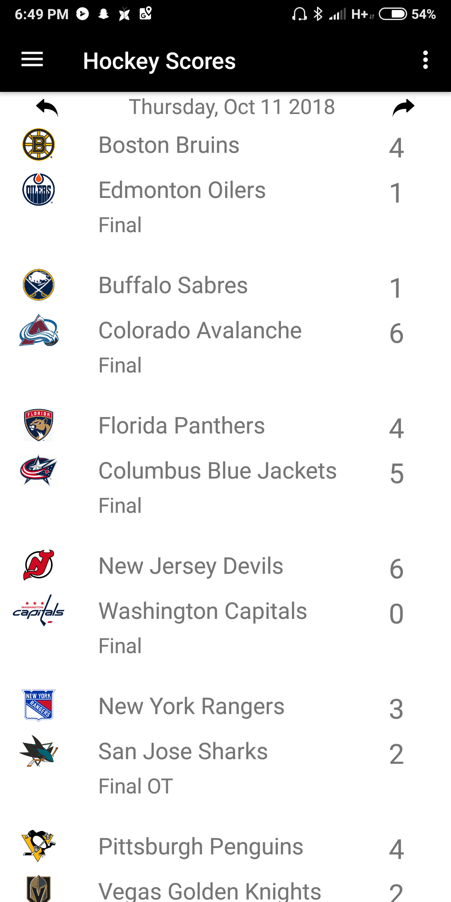
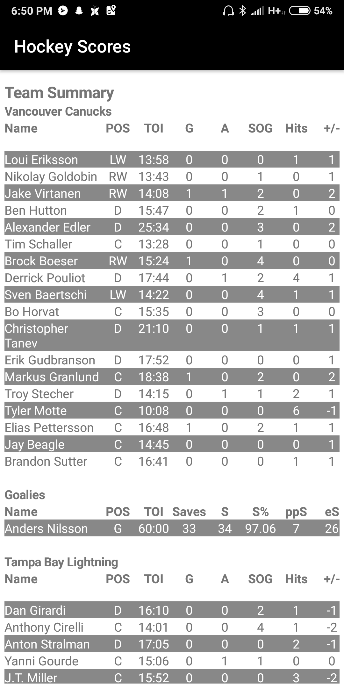
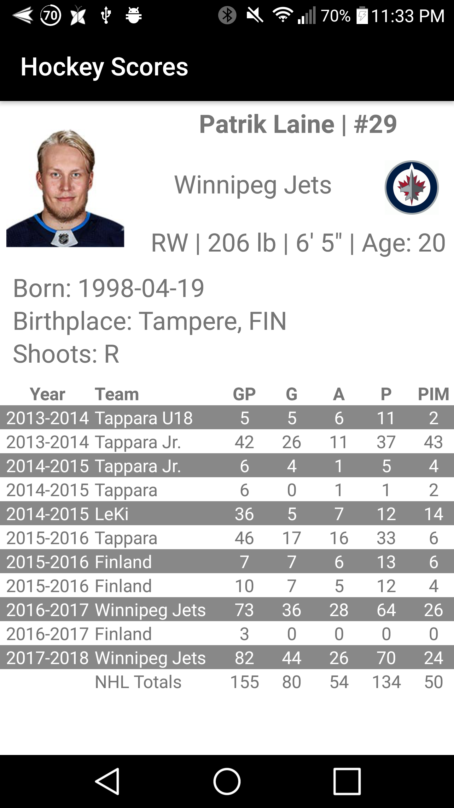
Queries NHL API to return relevant information in JSON Format
Android's Volley library is used to perform HTTPS GET Requests
UI dynamically adjusts to different screen resolutions
Datetime library used for game date information
Offers instant replays of goals within Box Score
DJANGO FRAMEWORK BASED WEB APPLICATION
Click on the images to make them bigger
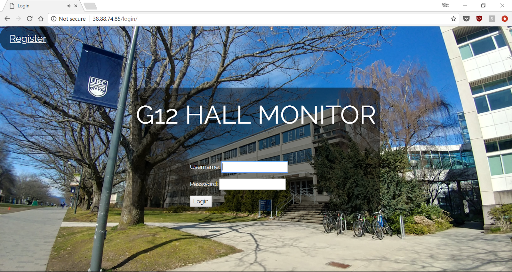
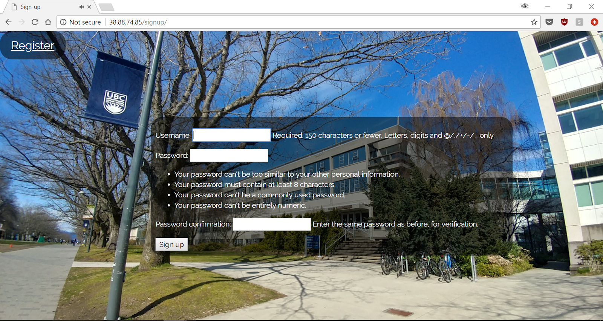
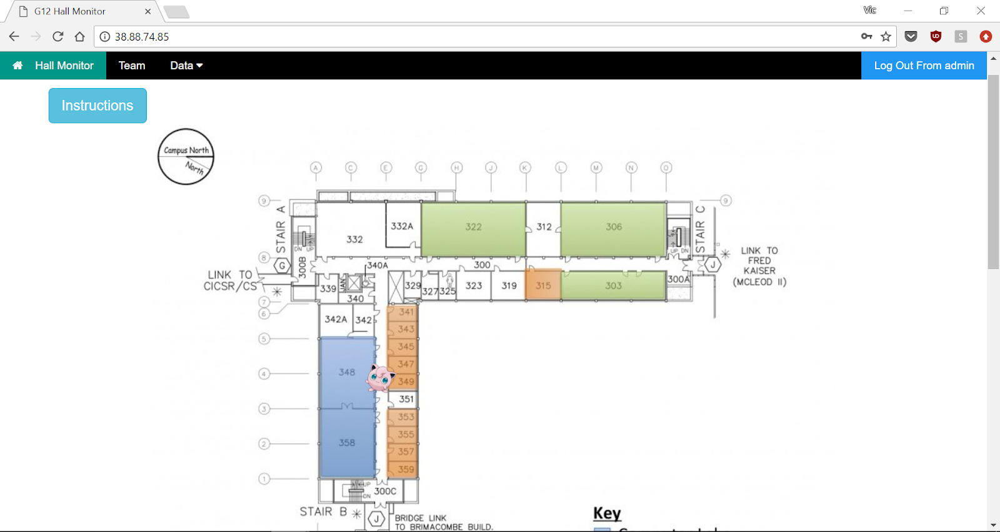
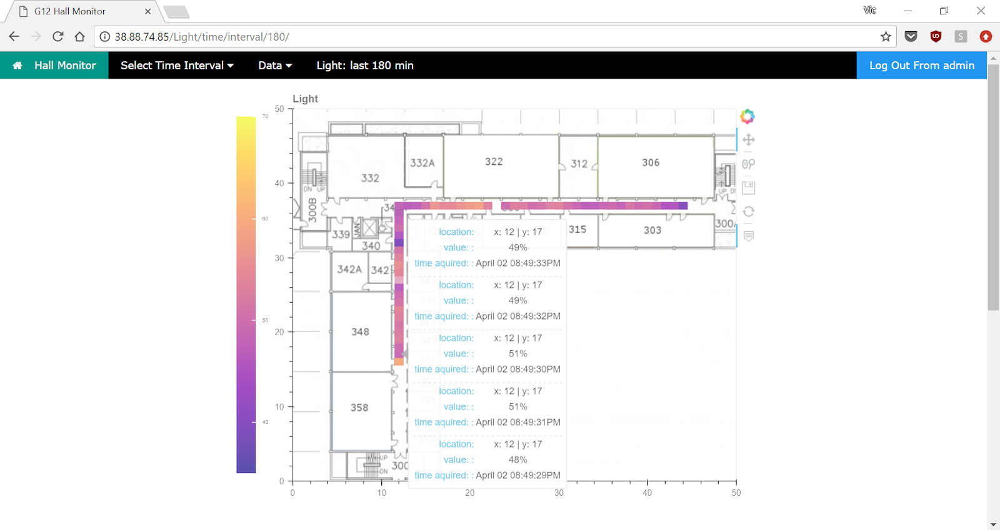
Project Description
Web Application displays data (ambient light, noise level, temperature, etc.) collected by a robot.
Robot's location is displayed live.
Data is pulled from the database and auto-updated on the site every 5 seconds
Data is presented as a heatmap as a user friendly interface
Technologies Used
Backend written in Python using Django Framework
Frontend involves HTML, CSS and JavaScript
Ajax and JQuery used to perform automatic update of page information
SQLLite Database used to store data
Hosted on server running on Linux Virtual Machine with Apache
DATABASES, QUERIES AND STATISTICAL LEARNING
Click on the images to make them bigger
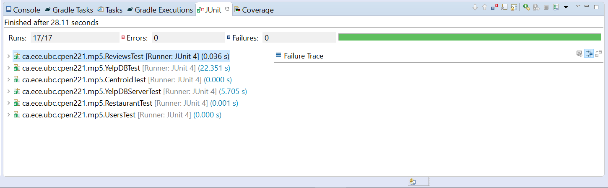
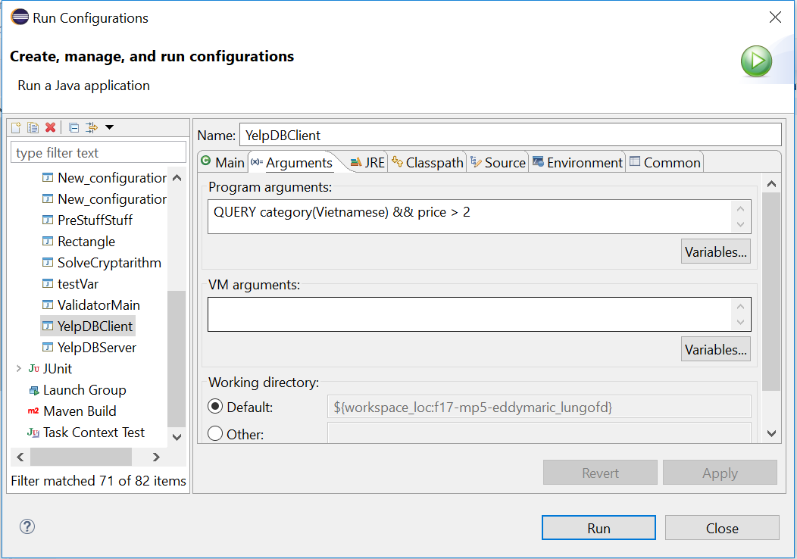
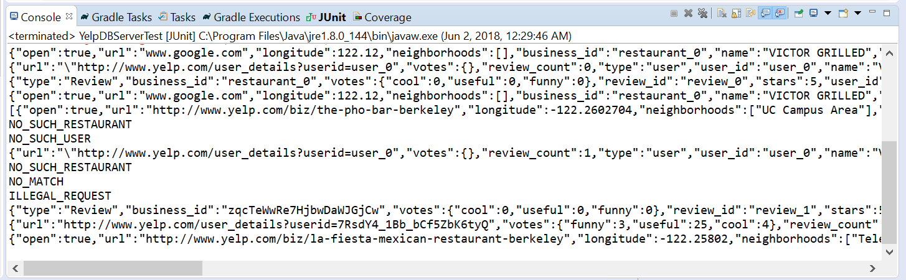
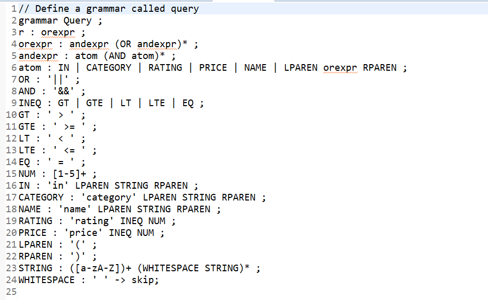
Worked with datasets involving lists of restaurants, users and reviews in JSON format, resulting in the construction of a mutable database using Java
Implemented a k-means clustering algorithm to group together clusters of inputs around centroids. Restaurants were grouped around centroids based on their longitude and latitude positions
Executed a least squares regression algorithm to predict future trends based on current data. Given the average price of a restaurant, a user’s review for that restaurant would be predicted based on that user’s past reviews.
Used git to work effectively with a partner on separate branches, thereby preserving a clean master branch
Constructed a multi-threaded server capable of handling simple requests including support for structured queries
Wrote grammar for a query language to support structured queries over the constructed database and enable a request-response model (Input was parsed with ANTLR, a parsing generator)
SIMPLE RISC MACHINE
Click on the images to make them bigger
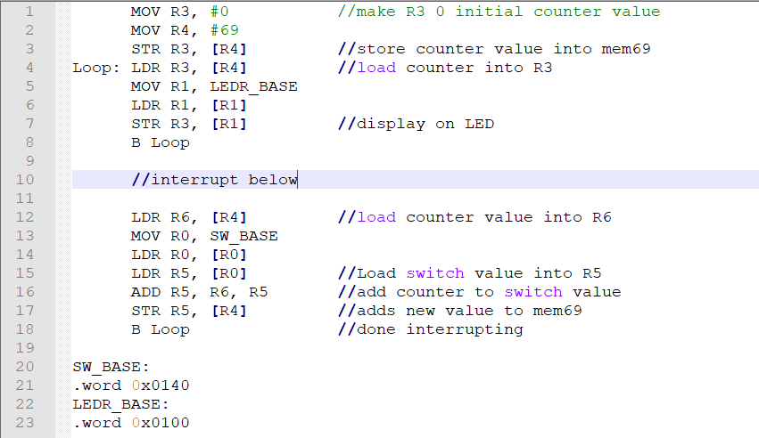
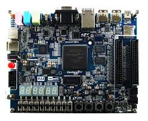
Utilized ModelSim and Quartus to build a simple “Reduced Instruction Set Computer” (RISC) with Verilog, thereby gaining a better understanding of the chip functionality for ARM “instruction set architecture”
Integrated a finite state machine controller and instruction decoder to allow the RISC to support the following instructions: MOV, ADD, CMP, AND, MVN
Added memory to RISC to store and hold instructions, resulting in an extended RISC Machine interface that supports outside communication with memory mapped I/O
Expanded the RISC Machine to support branching and conditional branching, a key component of function calls, allowing programs implementing any algorithm within the scope of the memory to be executed
RELEVANT COURSES
APSC 160 Introduction to Computation in Engineering Design
Analysis and simulation, laboratory data acquisition and processing, measurement interfaces, engineering tools, computer systems organization, programming languages.
CPEN 211 Introduction to Microcomputers
Boolean algebra; combinational and sequential circuits; organization and operation of microcomputers, memory addressing modes, representation of information, instruction sets, machine and assembly language programming, systems programs, I/O structures, I/O interfacing and I/O programming, introduction to digital system design using microcomputers.
CPEN 221 Principles of Software Construction
Design, implementation, reasoning about software systems: abstraction and specification of software, testing, verification, abstract data types, object-oriented design, type hierarchies, concurrent software design.
CPEN 291 Computer Engineering Design Studio I
Design projects involving hardware (electronic devices and circuits, microcomputers) and software. Use of tools including Arduino, Processing and Git.
CPSC 221 Basic Algorithms and Data Structures
Design and analysis of basic algorithms and data structures; algorithm analysis methods, searching and sorting algorithms, basic data structures, graphs and concurrency.
CPSC 261 Basics of Computer Systems
Software architecture, operating systems, and I/O architectures. Relationships between application software, operating systems, and computing hardware; critical sections, deadlock avoidance, and performance; principles and operation of disks and networks.
MATH 220 Mathematical Proof
Sets and functions; induction; cardinality; properties of the real numbers; sequences, series, and limits. Logic, structure, style, and clarity of proofs emphasized throughout.